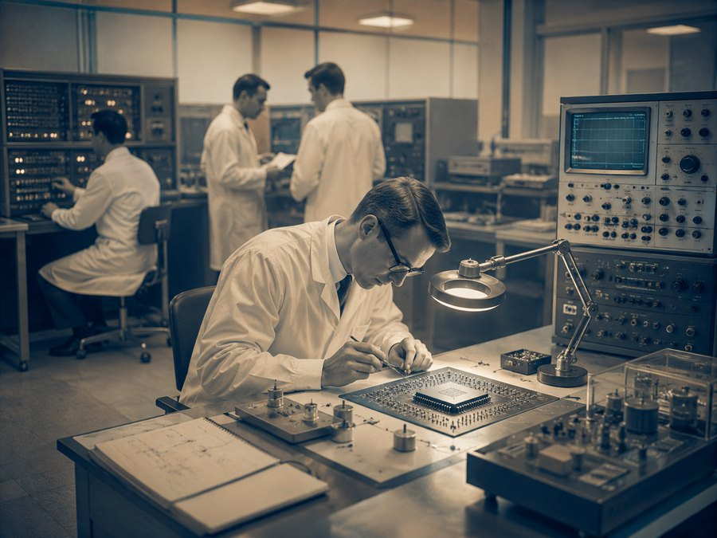

1968
Innovation Roots
Intel’s story begins with a focus on invention, engineering, and the future of computing.
This card connects Intel’s early technology history to today’s responsibility to design innovation with environmental awareness.